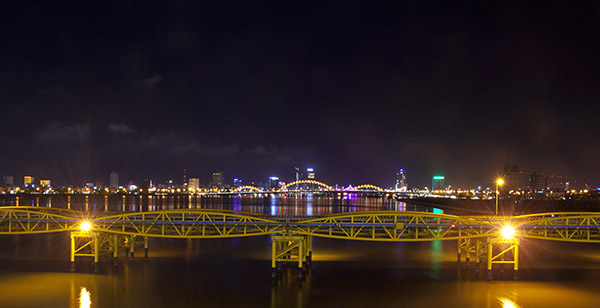

NGUYEN VAN TROI BRIDGE
CẦU NGUYỄN VĂN TRỖI

Nguyen Van Troi Bridge: “Cinderella” of Da Nang City – is what sculptor Pham Van Hang said about the Nguyen Van Troi Bridge, which is almost half a century old and is about to finish its traffic mission for Da Nang people and will be kept as a memento of the city.
Mr. Hang is a son of Da Nang, who grew up and travelled all around the country. Each time he comes back to his hometown, he always goes to this old bridge, chooses a spot, lights a cigarette and then watches the modern construction springing up... To him, nothing can replace the spans, the yellow steel beams, because they contain many memories of this city along side the Han River.
“Cinderella is a cloddish, clumsy girl yet she is also lovely and charming that makes us can’t stop loving her” – Sculptor Pham Van Hang make a comparison about the oldest bridge that spanning across Han River. It has accidentally become a witness of the city overtime. Nguyen Van Troi Bridge, which was used to be the highest point in the river, has become a small bridge in the middle of more modern bridges and high-rise buildings nowadays.